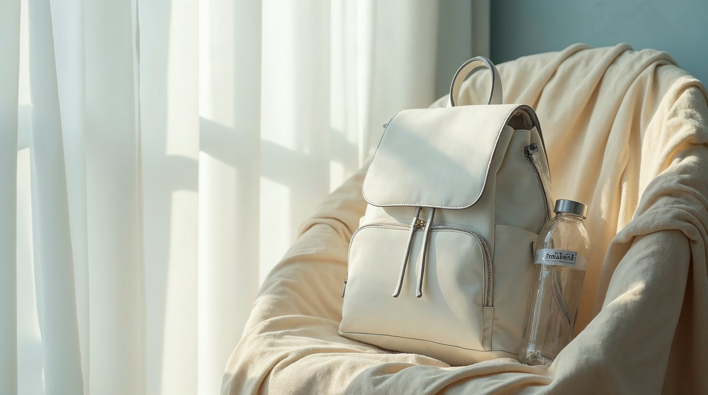
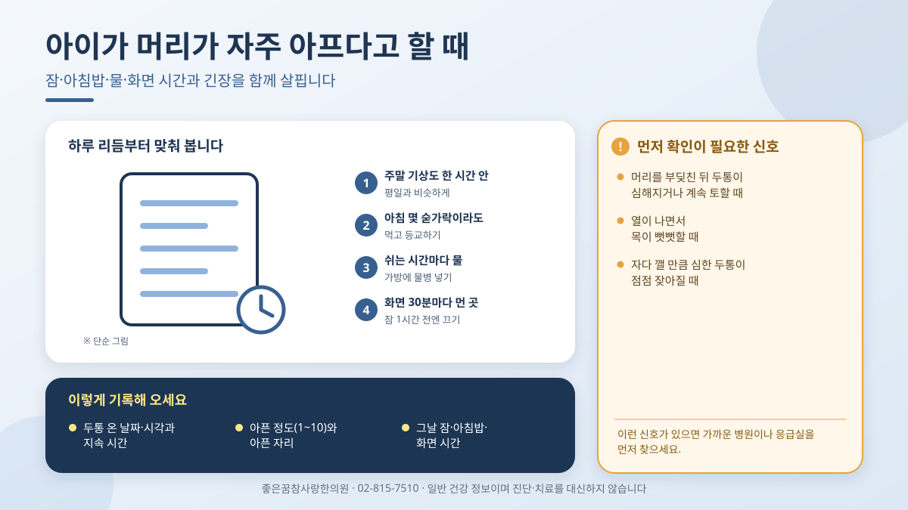

이종호 한의사 감수좋은꿈참사랑한의원 대표원장 (한의사 면허번호 19769)발행 2026-11-26 · 수정 2026-11-26
이 글의 차례
학교에서 돌아온 아이가 가방을 내려놓자마자 소파에 눕습니다. "엄마, 머리 아파." 지난주에도, 그 전주에도 들은 말입니다. 열을 재 보면 정상이고, 저녁을 먹고 나면 언제 그랬냐는 듯 뛰어놉니다. 꾀병인가 싶다가도, 정말 아픈 것 같은 얼굴에 마음이 쓰입니다.
아이들도 두통을 겪습니다. 생각보다 흔해서, 초등학교 고학년과 청소년기로 갈수록 머리가 아프다는 아이가 늘어난다고 알려져 있습니다. 대부분은 잠, 식사, 물, 화면 시간, 긴장 같은 생활의 흐름과 얽혀 있는 두통입니다.
진료실에서 부모님께 먼저 드리는 말씀이 있습니다. 아이가 머리가 아프다고 할 때는 일단 믿어 주시라고요. 아이는 어른만큼 몸의 느낌을 정확한 말로 옮기지 못합니다. '머리 아프다'는 말 속에 피곤함, 배고픔, 걱정이 함께 들어 있을 때도 많습니다. 그 말을 함께 풀어 보는 것이 첫걸음입니다.
아이가 아프다고 할 때 부모님이 침착하게 받아 주면, 아이도 자기 몸을 겁내지 않고 이야기하게 됩니다.
왜 아이도 머리가 아플까요
아이의 두통은 하나의 원인보다 여러 가지가 겹쳐 생기는 경우가 많습니다. 늦게 자고 일찍 일어나 잠이 부족한 날, 아침을 거르고 등교한 날, 물을 거의 마시지 않은 날, 휴대폰이나 태블릿을 오래 본 날에 두통이 몰린다는 이야기를 자주 듣습니다.
긴장도 큰 몫을 합니다. 시험, 발표, 친구 관계, 새 학기처럼 마음 쓰이는 일이 있을 때 아이는 어깨와 목이 굳고 머리가 조이는 느낌을 받습니다. 아이 스스로는 걱정 때문인 줄 모르고 그냥 '머리가 아프다'고 말하는 경우가 많습니다.
눈도 살펴야 합니다. 시력이 떨어졌는데 안경 없이 칠판과 화면을 보느라 눈을 찡그리면, 오후로 갈수록 이마와 눈 주위가 아프다고 합니다. 축농증이나 비염으로 코가 막혀 있을 때도 이마와 눈 밑이 묵직해질 수 있습니다.
가족 가운데 편두통이 있는 분이 있다면 아이에게도 편두통이 나타날 수 있다고 알려져 있습니다. 아이의 편두통은 어른보다 짧게 오고, 머리 양쪽이 아프거나 배가 아픈 모습으로 오기도 합니다.
한의학에서는 아이의 두통을 볼 때 잠과 소화, 몸의 열과 긴장을 함께 봅니다. 잘 체하고 배가 자주 아픈 아이, 열이 잘 오르고 얼굴이 붉어지는 아이, 예민하고 쉽게 긴장하는 아이는 두통이 오는 길이 조금씩 다르다고 보아 왔습니다.
아이 두통, 이렇게 나눠 봅니다
머리 전체가 조이는 듯한 두통
머리 양쪽이나 이마, 뒷머리가 띠를 두른 듯 조이고 묵직합니다. 오후나 저녁으로 갈수록 심해지고, 자고 나면 덜한 편입니다. 아파도 놀 수는 있고, 토하지는 않습니다. 긴장성 두통으로 부르며, 잠과 자세, 긴장, 화면 시간과 관련이 깊습니다.
욱신거리며 쉬어야 하는 두통
머리가 욱신욱신 뛰듯이 아프고, 빛이나 소리가 싫어지며, 속이 메스껍거나 토하기도 합니다. 아이가 하던 일을 멈추고 어두운 방에 눕고 싶어 하고, 한숨 자고 나면 가라앉는 경우가 많습니다. 편두통의 모습으로, 가족력이 있는 아이에게서 더 흔하다고 알려져 있습니다.
다른 병과 함께 오는 두통
감기나 독감, 축농증, 중이염처럼 열이 나는 병과 함께 오는 두통은 그 병이 가라앉으면서 함께 줄어드는 경우가 많습니다. 머리를 부딪친 뒤 생긴 두통은 따로 살펴야 합니다.
배가 아프고 어지러운 모습으로 오는 경우
어린아이는 두통 대신 배가 아프다고 하거나, 멀미처럼 어지럽다고 하기도 합니다. 이유 없이 반복되는 복통이나 어지럼이 편두통과 이어져 있는 경우도 있어, 배와 머리를 함께 여쭙습니다.
성장기라서 달라지는 것들
사춘기 무렵에는 몸이 빠르게 자라고 호르몬이 바뀌며 잠드는 시각이 자연스럽게 늦어집니다. 그런데 등교 시각은 그대로라 잠이 모자라기 쉽고, 이 시기에 두통이 늘었다는 아이가 많습니다. 여자아이는 생리를 시작하면서 생리 무렵 두통이 생기기도 합니다.
키가 크는 시기에 식사량이 따라가지 못하거나, 다이어트를 한다며 끼니를 거르는 청소년도 두통을 자주 호소합니다. 그래서 저는 아이의 두통을 볼 때 키와 체중의 변화, 식사량도 함께 여쭙습니다.
어른 두통과는 이렇게 다릅니다
아이의 두통은 어른보다 짧게 왔다 가는 경우가 많고, 아픈 자리를 정확히 말하기 어려워합니다. 그래서 아이의 말보다 아이의 행동이 더 많은 것을 알려 줍니다. 놀이를 멈추는지, 눕고 싶어 하는지, 밥을 남기는지, 얼굴빛이 하얘지는지를 보세요.
어른에게 쓰는 진통제를 아이에게 그대로 먹이는 일은 피해야 합니다. 아이에게 맞는 약과 양은 소아청소년과나 약사에게 확인하세요. 진통제를 일주일에 여러 번 먹어야 할 만큼 두통이 잦다면, 약을 늘리기보다 진료로 흐름을 살펴보는 편이 좋습니다.
스스로 점검해 보세요
아래 가운데 해당하는 줄에 표시해 두셨다가 진료 때 보여 주세요. 진단을 내리려는 목록은 아닙니다.
- 한 달에 몇 번 이상 머리가 아프다고 한다
- 주로 오후나 저녁, 학원에 다녀온 뒤에 아프다고 한다
- 잠이 부족했거나 아침을 거른 날 더 아파한다
- 휴대폰이나 태블릿을 오래 본 날 더 아파한다
- 칠판이나 화면을 볼 때 눈을 찡그린다
- 아플 때 토하거나 어두운 곳에 눕고 싶어 한다
- 시험이나 발표 같은 일이 있을 때 더 잦다
진료실에서 자주 듣는 걱정
"머리가 자주 아프면 뇌에 문제가 있는 건 아닐까요?" 하고 걱정하시는 부모님이 많습니다. 아이 두통의 대부분은 생활 리듬과 얽힌 두통이고, 아래 '먼저 확인이 필요한' 신호가 없는지 살피는 것이 첫 순서입니다. 필요하면 소아청소년과에서 진찰과 검사를 먼저 받으시도록 안내합니다.
"두통약을 자주 먹이면 내성이 생기나요?"라는 질문도 자주 받습니다. 진통제를 너무 자주 먹으면 오히려 두통이 잦아지는 경우가 있다고 알려져 있어서, 약을 먹은 날을 기록해 두시면 흐름을 보는 데 도움이 됩니다.
먼저 이렇게 여쭙니다
진료실에서는 부모님과 아이에게 대략 이런 순서로 여쭙습니다. 아이가 대답하기 어려워하면 천천히 기다립니다.
- 언제부터 아프다고 했고, 한 달에 몇 번쯤인가요?
- 하루 중 언제 아프고, 얼마나 오래 가나요?
- 아이가 손가락으로 짚는 곳은 이마, 관자놀이, 뒷머리 가운데 어디인가요?
- 아플 때 메스꺼움, 토함, 빛이나 소리를 싫어함이 있나요?
- 잠드는 시각과 일어나는 시각, 아침 식사는 어떤가요?
- 하루 화면 시간과 학원 일정은 어떤가요?
- 최근 시력 검사를 받았나요? 코막힘이나 비염은 있나요?
- 가족 가운데 편두통이 있는 분이 있나요?
아이에게 직접 물어볼 때는 "많이 아파?"보다 "아픈 게 1부터 10까지 중에 몇이야?", "아플 때 뭐 하고 싶어?"처럼 고를 수 있게 묻는 편이 대답을 끌어내기 쉽습니다.
일상에서 먼저 해 볼 수 있는 것
아이 두통은 생활 리듬을 조금 바로잡는 것만으로 줄어드는 경우가 많다고 알려져 있습니다. 아래에서 한두 가지만 골라 2~3주 이어 보세요.
- 주말에도 일어나는 시각을 평일과 한 시간 안으로 맞추기
- 아침은 몇 숟가락이라도 먹고 등교하기
- 물병을 가방에 넣어 쉬는 시간마다 몇 모금씩 마시기
- 화면은 30분 보면 잠시 먼 곳 보기, 잠들기 한 시간 전에는 끄기
- 학원 사이 이동 시간에 간단한 간식 챙기기
- 하루 30분은 밖에서 뛰어놀거나 걷기
아플 때는 조용하고 조금 어두운 곳에서 쉬게 해 주세요. 한숨 자고 나면 가라앉는 경우가 많습니다. 이마나 목 뒤에 미지근한 수건을 대 주는 것도 편하다는 아이가 있습니다. 쉬는 동안 물을 한 컵 마시게 하고, 끼니를 거른 날이라면 가벼운 간식을 챙겨 주세요. 쉬고 난 뒤 아이가 어땠는지도 기록에 남겨 두시면 좋습니다.
아이가 걱정이 많은 시기라면 두통 이야기만 하지 말고 요즘 마음이 어떤지 가볍게 물어봐 주세요. "머리 아프니까 학원 쉬자"가 반복되면 두통이 회피의 통로가 되기도 해서, 쉬게 하되 그 뒤의 일정도 함께 정해 두는 편이 좋습니다.
이 글은 반복되는 아이 두통 전체를 살피는 쪽에 무게를 두었습니다. 어른의 긴장성 두통에 대해서는 스트레스를 받으면 뒷목이 당기고 머리가 아픈 긴장성 두통은 어떻게 살피나요?를 함께 읽어 보세요.
화면 시간과 자세를 함께 봅니다
요즘 아이들은 학교 수업과 숙제, 학원 인강까지 화면을 보는 시간이 깁니다. 고개를 숙이고 작은 화면을 오래 보면 목과 어깨가 굳고, 눈을 깜빡이는 횟수가 줄어 눈이 마르며, 오후로 갈수록 머리가 묵직해지기 쉽습니다.
화면을 아예 끊기는 어렵습니다. 대신 책상 높이와 화면 높이를 맞춰 고개를 덜 숙이게 하고, 태블릿은 거치대에 세워 쓰게 해 보세요. 누워서 휴대폰을 보는 습관은 목과 눈 모두에 부담이 커서 줄이는 편이 좋습니다.
밤늦게 화면을 보면 잠드는 시각이 밀리고, 잠이 부족하면 다음 날 두통이 오는 고리가 생깁니다. 아이의 잠과 화면 시간은 아이가 휴대폰을 보다가 밤늦게 잠들 때는 어떻게 바꿔 갈 수 있을까요?에 따로 정리해 두었습니다.

학교와 학원에서의 하루도 함께 봅니다
아이의 두통은 집보다 학교와 학원에서 더 자주 시작됩니다. 담임 선생님이나 보건 선생님께 아이가 두통이 잦다는 것을 미리 알려 두시면, 아플 때 잠시 쉬거나 물을 마실 수 있도록 도와주시는 경우가 많습니다.
보건실에 간 날을 적어 두면 두통이 어떤 수업이나 시간에 몰리는지도 보입니다. 체육 시간 뒤 물을 마시지 못한 날, 점심을 급하게 먹은 날, 쉬는 시간 없이 학원으로 바로 간 날처럼 작은 단서가 쌓입니다.
학원 일정이 빡빡하다면 일주일 가운데 하루쯤은 저녁을 집에서 천천히 먹고 일찍 쉬는 날을 만들어 보세요. 일정을 다 줄이기는 어렵더라도, 숨 돌릴 하루가 있으면 두통이 몰리는 흐름이 달라지는 아이가 많습니다.
형제자매가 있다면 두통이 있는 아이만 특별히 대하기보다, 온 가족의 잠자리 시각과 식사 시각을 함께 맞춰 보세요. 가족 전체의 리듬이 바뀌면 아이도 덜 부담스럽게 따라옵니다.
한의원에서 함께 살필 수 있는 경우
검사에서 특별한 원인이 보이지 않았는데 두통이 반복된다면, 소아청소년과 진료와 함께 한의원에서 생활 리듬과 몸 전체를 살펴보실 수 있습니다.
- 잠, 식사, 긴장과 얽혀 두통이 자주 반복되는 경우
- 잘 체하고 배가 자주 아프면서 두통도 잦은 경우
- 목과 어깨가 쉽게 굳고 오후마다 머리가 무겁다는 경우
- 시험이나 새 학기처럼 긴장하는 시기마다 두통이 몰리는 경우
좋은꿈참사랑한의원에 오시면 아이가 편하게 느끼도록 이야기부터 나눈 뒤, 맥과 혀, 목과 어깨를 살핍니다. 그다음 침, 한약 상담, 생활 관리 가운데 아이에게 맞는 방법을 부모님과 함께 정합니다.
침이 무서운 아이에게는 억지로 권하지 않습니다. 아이의 나이와 마음, 그날의 컨디션에 맞춰 방법을 고르고, 처음에는 짧게 시작합니다. 한약을 상의할 때는 아이의 체중과 소화, 드시는 약을 모두 확인한 뒤 신중하게 정합니다.
어느 정도 이어 갈지는 진찰 뒤 두통 기록의 흐름을 보며 함께 정합니다. 두통이 잦아든 뒤에도 잠과 식사 리듬이 다시 흐트러지지 않도록 생활 쪽 이야기를 계속 이어 갑니다.
이렇게 기록해 오시면 상담이 쉬워집니다
아이 두통은 기록이 있으면 흐름이 훨씬 잘 보입니다. 2~4주만 부모님과 아이가 함께 적어 보세요.
- 두통이 온 날짜와 시각, 얼마나 지속됐는지
- 아픈 정도(아이에게 1~10 가운데 고르게 하기)와 아픈 자리
- 그날 잠든 시각과 일어난 시각, 아침 식사 여부
- 그날 화면을 본 시간과 물을 마신 정도
- 함께 있었던 일(시험, 발표, 늦은 학원, 운동)
- 약을 먹었는지, 쉬고 나서 어땠는지
아이가 직접 스티커나 색깔로 두통 달력을 꾸미게 하면 재미있어하는 경우가 많습니다. 기록을 보면 '월요일 오후', '학원 가는 날 저녁'처럼 두통이 모이는 자리가 보이기 시작합니다.
아이의 '머리 아파'는 몸과 마음이 함께 보내는 신호일 때가 많습니다. 다그치기보다 함께 들여다보면 아이도 자기 몸을 알아 가는 법을 배웁니다. 다음에 오시면 지난 두통이 어떤 날 왔는지부터 여쭙겠습니다.
이런 증상은 먼저 확인이 필요합니다
- 머리를 부딪친 뒤 두통이 점점 심해지거나 계속 토하고 처지는 경우
- 열이 나면서 목이 뻣뻣하거나, 자다가 깰 만큼 심한 두통이 점점 잦아지는 경우
이런 신호가 있으면 한의원보다 가까운 병원이나 응급실을 먼저 찾으세요.
함께 읽으면 좋은 글
- 스트레스를 받으면 뒷목이 당기고 머리가 아픈 긴장성 두통은 어떻게 살피나요?
- 한쪽 머리가 욱신거리는 편두통은 생활에서 무엇을 기록하나요?
- 눈이 피로할 때 생기는 두통은 어떻게 살피나요?
- 아이가 휴대폰을 보다가 밤늦게 잠들 때는 어떻게 바꿔 갈 수 있을까요?

여쭙는 것
- 언제부터 아프다고 했고, 한 달에 몇 번쯤인가요?
- 하루 중 언제 아프고, 얼마나 오래 가나요?
- 아이가 손가락으로 짚는 곳은 이마, 관자놀이, 뒷머리 가운데 어디인가요?
생활에서 해 볼 것
- 주말에도 일어나는 시각을 평일과 한 시간 안으로 맞추기
- 아침은 몇 숟가락이라도 먹고 등교하기
- 물병을 가방에 넣어 쉬는 시간마다 몇 모금씩 마시기
한의원에서 함께 살필 것
- 잠, 식사, 긴장과 얽혀 두통이 자주 반복되는 경우
- 잘 체하고 배가 자주 아프면서 두통도 잦은 경우
- 목과 어깨가 쉽게 굳고 오후마다 머리가 무겁다는 경우
먼저 확인이 필요한 신호
- 머리를 부딪친 뒤 두통이 점점 심해지거나 계속 토하고 처지는 경우
- 열이 나면서 목이 뻣뻣하거나, 자다가 깰 만큼 심한 두통이 점점 잦아지는 경우
한눈에 보는 표
| 구분 | 핵심 |
|---|---|
| 여쭙는 것 | 언제부터 아프다고 했고, 한 달에 몇 번쯤인가요? 하루 중 언제 아프고, 얼마나 오래 가나요? |
| 생활에서 해 볼 것 | 주말에도 일어나는 시각을 평일과 한 시간 안으로 맞추기 아침은 몇 숟가락이라도 먹고 등교하기 |
| 한의원에서 함께 살필 것 | 잠, 식사, 긴장과 얽혀 두통이 자주 반복되는 경우 잘 체하고 배가 자주 아프면서 두통도 잦은 경우 |
| 먼저 확인이 필요한 신호 | 머리를 부딪친 뒤 두통이 점점 심해지거나 계속 토하고 처지는 경우 열이 나면서 목이 뻣뻣하거나, 자다가 깰 만큼 심한 두통이 점점 잦아지는 경우 |
자주 묻는 질문
아이가 머리가 아프다는데 꾀병일 수도 있나요?
아이의 두통은 실제로 흔하고, 긴장이나 걱정이 몸의 통증으로 나타나기도 합니다. 꾀병으로 단정하기보다 언제, 어떤 날 아픈지 기록해 보시면 흐름이 보입니다.
아이 두통에 진통제를 먹여도 되나요?
아이에게 맞는 약과 양은 소아청소년과나 약사에게 확인하세요. 일주일에 여러 번 먹어야 할 만큼 잦다면 약을 늘리기보다 진료로 흐름을 살펴보는 편이 좋습니다.
아이도 침을 맞을 수 있나요?
아이의 나이와 마음, 그날의 컨디션을 보고 정합니다. 무서워하는 아이에게는 억지로 권하지 않고, 다른 방법과 생활 관리부터 함께 찾습니다.
시력 검사도 받아 봐야 하나요?
칠판이나 화면을 볼 때 눈을 찡그리거나 오후마다 이마가 아프다고 한다면 안과에서 시력 검사를 받아 보시길 권합니다.
편두통은 유전되나요?
가족 가운데 편두통이 있으면 아이에게도 나타날 수 있다고 알려져 있습니다. 가족력이 있다면 진료 때 꼭 알려 주세요.
좋은꿈참사랑한의원은 재진 때 지난번 이야기부터 이어서 여쭙니다. 진료시간과 예약은 오시는 길에서 확인하세요.
어디서 상담받을 수 있나요?
좋은꿈참사랑한의원은 서울 동작구 만양로2길 2 신성빌딩 3층·5층(서울 동작구 상도동, 7호선 상도역 3번 출구 근처)에 있습니다. 한의사 3명(이종호 대표원장, 조영기 수석진료원장, 정원영 진료원장)이 진료합니다. 진료시간은 평일 09:30~20:00(점심 13:00~14:00), 토·일·공휴일 09:30~15:00이며, 방문 전 전화로 확인을 권합니다. 예약은 네이버 예약, 카카오톡 상담, 전화 02-815-7510로 받습니다.
이 글은 일반적인 건강 정보이며 개인의 진단이나 치료를 대신하지 않습니다. 증상이 있거나 복용 중인 약이 있다면 진료를 통해 확인하세요. 치료 효과는 개인마다 다를 수 있습니다.
작성 기준: 일반적으로 알려져 있는 건강 정보를 참고해 정리했습니다(대표원장 감수). 증상 기록은 1~2주 동안 하루 1회, 비슷한 시간에 적어 오시면 지난 상태와 비교하기 쉽습니다.